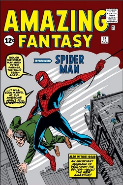

  <!DOCTYPE html>
  <html>
  <head>
  	<meta charset="utf-8">
  	<meta name="viewport" content="width=device-width, initial-scale=1">
  	<title></title>
  	<style>
  		body {
  font-family: Arial;
}

#mainImg {
  width: 35%;
}

.box {
  border: 0.25px solid black;
  background-color: lightgray;
  width: 200px;
  padding: 1rem;
}

.boxLink {
  text-decoration: none;
}

.oldImg {
  height: 200px;
  width: 200px;
  margin-right: 1rem;
}

#description {
  background-color: antiquewhite;
}
  	</style>
  </head>
    <body>
   <!--  <h1>Spider Man</h1>
    
    <h2>About</h2>
    <p>
      <b>Spider-Man</b> is a superhero appearing in American comic books
      published by
      <a href="https://www.google.com/search?q=Marvel+Comics">Marvel Comics</a>.
      Created by writer-editor <b>Stan Lee</b> and artist <b>Steve Ditko</b>, he
      first appeared in the anthology comic book
      <a href="https://www.google.com/search?q=Amazing+Fantasy"
        >Amazing Fantasy</a
      >
      #15 (August 1962) in the <a href="#">Silver Age of Comic Books</a>. He has
      been featured in comic books, television shows, films, video games,
      novels, and plays
    </p>

    <div class="box">
      <h4>Publication Info</h4>
      <ul>
        <li><a href="#" class="boxLink">Publisher</a></li>
        <li><a href="#" class="boxLink">First Appearance</a></li>
        <li>
          Created by
          <ul>
            <li><a href="#" class="boxLink">Stan Lee</a></li>
            <li><a href="#" class="boxLink">Steve Ditko</a></li>
          </ul>
        </li>
      </ul>
    </div>

    <h2>Creation & Development</h2>
    <p id="description">
      In 1962, with the success of the Fantastic Four, Marvel Comics editor and
      head writer Stan Lee was casting for a new superhero idea. He said the
      idea for Spider-Man arose from a surge in teenage demand for comic books
      and the desire to create a character with whom teens could identify. As
      with Fantastic Four, Lee saw Spider-Man as an opportunity to "get out of
      his system" what he felt was missing in comic books. In his autobiography,
      Lee cites the non-superhuman pulp magazine crime fighter the Spider as a
      great influence, and in a multitude of print and video interviews, Lee
      stated he was further inspired by seeing a spider climb up a wall—adding
      in his autobiography that he has told that story so often he has become
      unsure of whether or not this is true.
    </p>
    <div class="images">
      
      
      
    </div>-->
  

  </body> 
  <script>
  //  document.createElement("p");
  //  let newP = document.createElement("p");
  //  console.dir(newP)
  //  newP.innerText="hi i am new para";
  //  console.dir(newP)
  //  let box=document.querySelector(".box")
  //  box.appendChild(newP)

  //  document.createElement("button");
  //  let btn =document.createElement("button");
  //  console.dir(btn)
  //  btn.innerText="click me"
  //  console.dir(btn)
  //  box.appendChild(btn)
  
  // newP.append(" do not click")
  // newP.append(btn)

  let para=document.createElement("p")
  para.innerText="hey this para"
  document.querySelector("body").append(para)

  let head=document.createElement("h1")
  head.innerText="headinggg"
  document.querySelector("body").append(head)


  let div=document.createElement("div")
  let head2=document.createElement("h2")
  let para2=document.createElement("p")

  head2.innerText="in div"
  para2.innerText="para in div"

  div.append(head2)
  div.append(para2)

  document.querySelector("body").append(div)
  </script>
  </html>


